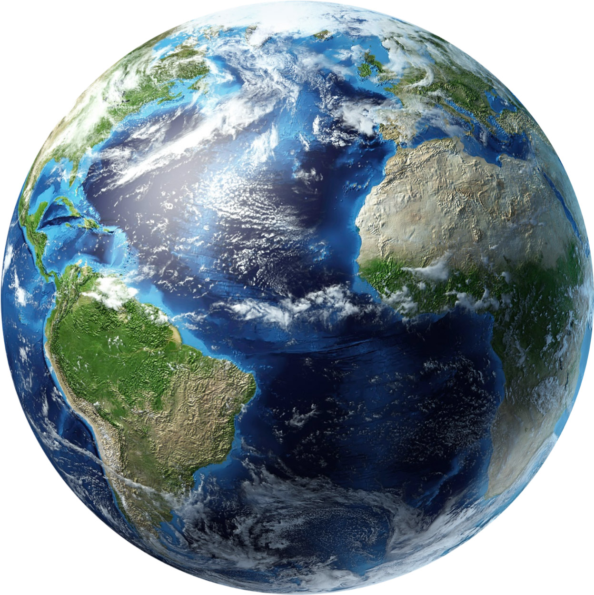 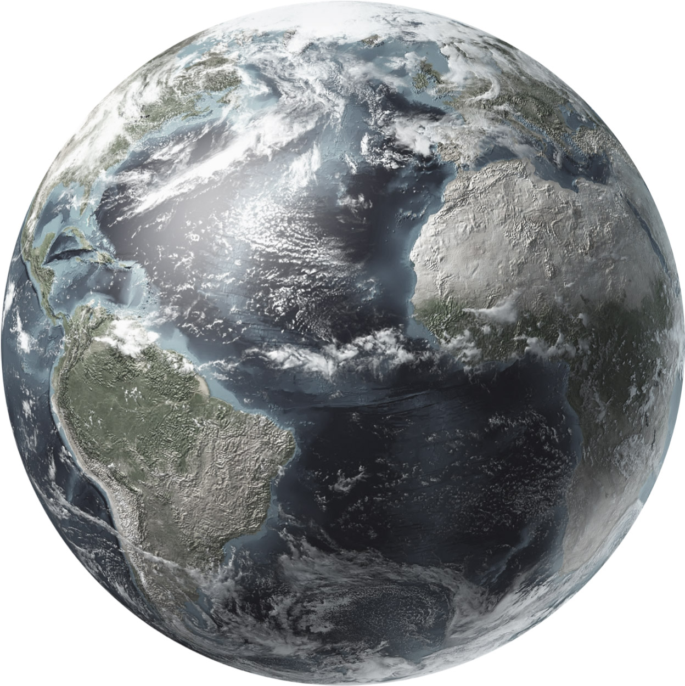  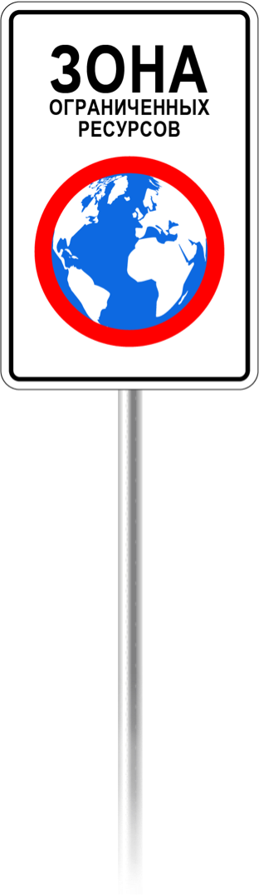  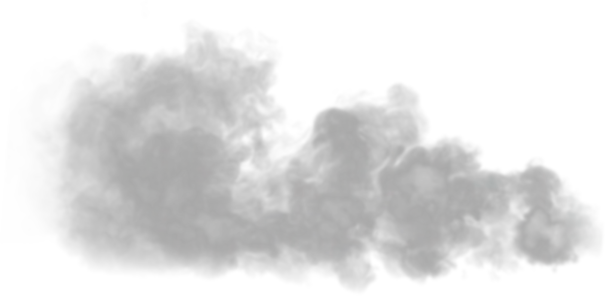 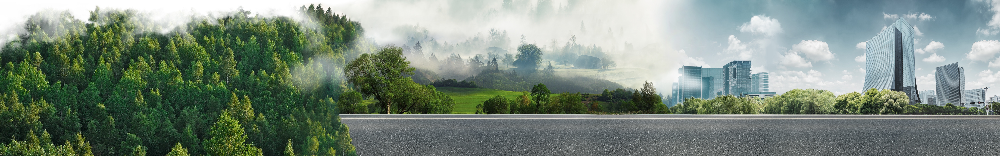
О дне экодолга
Чек от планеты Земля
Партнеры
Как уменьшить свой экослед
Новости
Поддержать
22 АВГУСТА 2020
#
ДЕНЬЭКОДОЛГА
В этот день мы истратили все ресурсы,
которые Земля может восстановить за год.
Следи за знаками: Сохраняй планету!
до 28%
Глобального экологического следа приходится на продовольствие.
Как сократить свой экослед?
Выбирай продукты, которые производятся с наименьшим ущербом для природных ресурсов. Такие продукты отмечаются экомаркировками.
Что это за экомаркировки?
Пройди тест и узнай, какие существуют экомаркировки и что они означают.
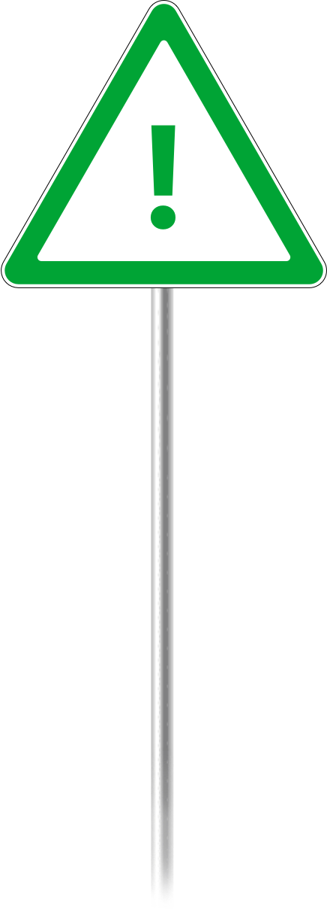
Узнать
Следи за знаками: сохраняй планету!
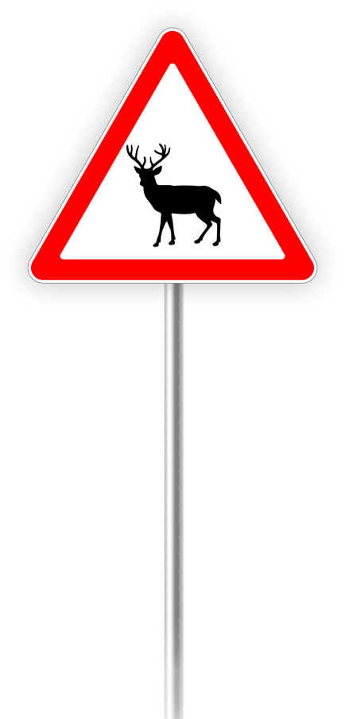 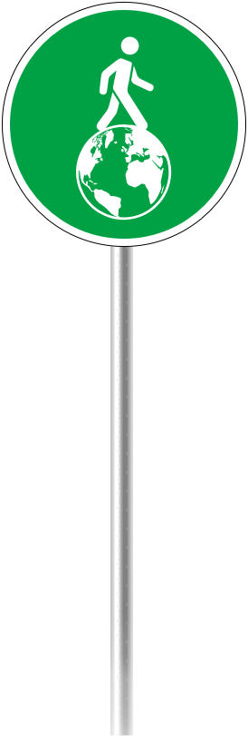
Твой счет от планеты Земля
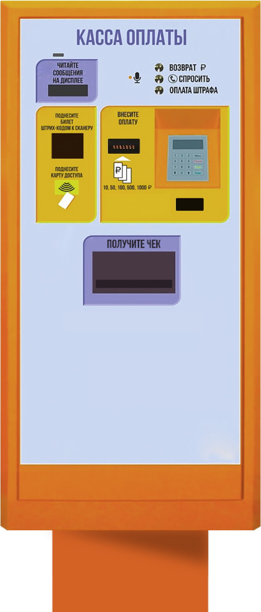
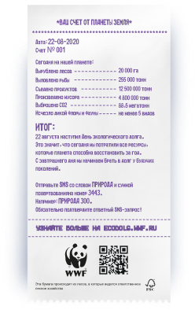
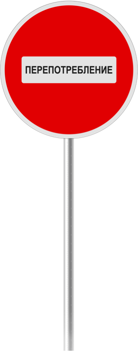
Партнеры
Генеральные партнеры
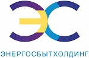
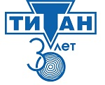
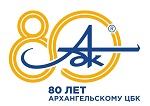
Партнеры
ИнфоПартнеры
Участники